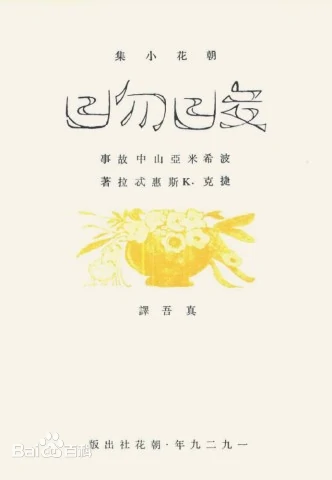
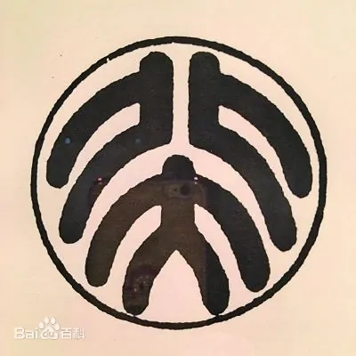
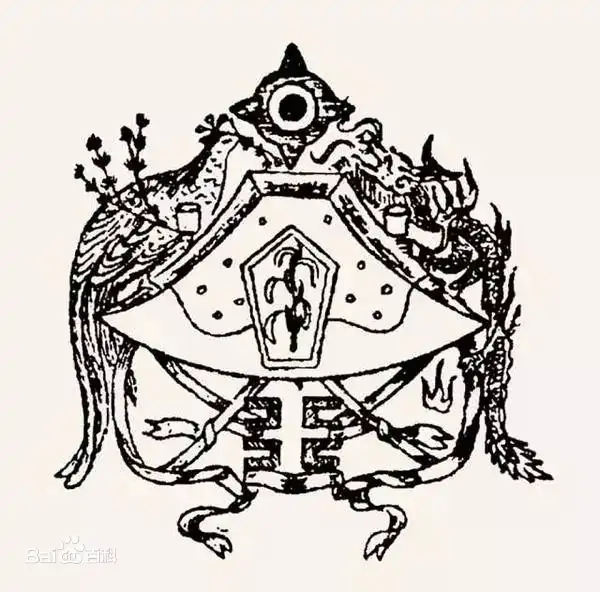

鲁迅（1881年9月25日—1936年10月19日），原名周樟寿，后改名周树人，字豫山，后改字豫才，浙江绍兴人。著名文学家、思想家、革命家、教育家 、民主战士，新文化运动的重要参与者，中国现代文学的奠基人之一。
| 封面设计 | 北大校徽（鲁迅原版） | 民国初期国徽设计 |
|---|---|---|
|  |  |  |
鲁迅是20世纪的文化巨人，他在小说、散文、杂文、木刻、现代诗、旧体诗、名著翻译、古籍校勘和现代学术等多个领域都有巨大贡献。作为中国现代文学的伟大奠基者，鲁迅创作的为数不多的小说建立了中国小说的新形式；他所创作散文更是“显示了文学革命的实绩”；他的所开创的杂文文体富有现代性、自由性、批判性和战斗性，是后世作家最常使用的“批判武器”，他所创作的杂文更是中国社会、政治、历史、法律、宗教、道德、哲学、文学、艺术乃至文化心理、民性、民情、民俗……的百科全书。几乎所有的中国作家都在鲁迅开创的基础上，发展了不同的方面的文学风格体式。作为翻译家他大量的翻译了外国的文学作品、科学自然作品为开启民智，引入先进的科学文化思想做出了巨大的贡献。而作为美术爱好者鲁迅大量引进了西方木刻、版画作品，并在理论和精神等多方面支持青年人学习木刻、版画艺术，极大的推进了现代木刻、版画在现代中国的传播与发展，为现代中国的美术事业做出卓越的贡献。
作为一名学术研究者，一方面，鲁迅运用西方的文学观念研究中国古典小说撰写了《中国小说史略》，其不仅结束了“中国之小说自来无史”的时代，也创造了文学史著作的典型范例，“为后学开示无数法门”，郭沫若将其与王国维的《宋元戏曲史》并称为为中国近代学术史上的双璧。另一方面他整理校对勘正了《古小说钩沉》《嵇康集》《汉画像集》《会稽郡故书杂集》等数十部古籍，为后世的古典文学研究留下了一笔巨大财富。
鲁迅堪称现代中国的民族魂，他的精神深刻影响着他的读者、研究者，以至一代又一代的中国现代作家、现代知识分子。鲁迅同时又是20世纪世界文化巨人之一。他创造了“内外两面，都和世界的时代思潮合流，而又并未梏亡中国的民族性”，并具有独特的个人风格的“现今想要参与世界上的事业的中国人”的文学。他与同时期的世界杰出的思想家和文学家一样，在关注本民族的同时，也在关注着人类共同面临的问题，并做出了自己的独特贡献。
鲁迅一生追求民主，早在新文学运动伊始时期便向封建旧文化宣战，不断与压迫民众的旧思想旧文化斗争。“女师大学潮”发生后与迫害学生的军阀进行论争，鲁迅不畏强暴执笔对战，显示出一个正直文人的气概。尔后国民党统治之下又大胆披露其黑暗统治。三十年代又与共产党内左倾的错误文艺路线进行斗争，其后与党领导下的文艺工作者合作成立了无产阶级文艺思想领导的左翼作家联盟，鲁迅作为左联的盟主领导左联粉碎了国民党反动文艺妄图绞杀无产阶级文艺的阴谋。